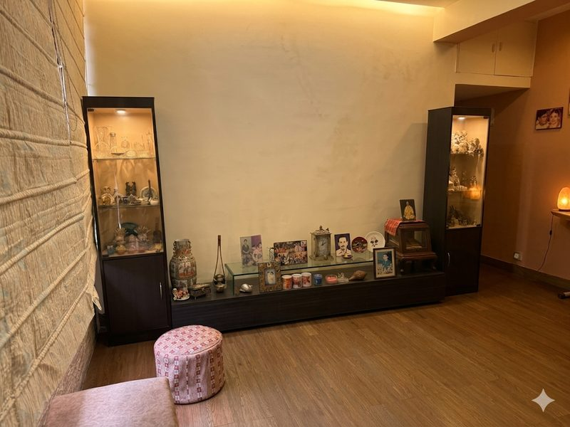
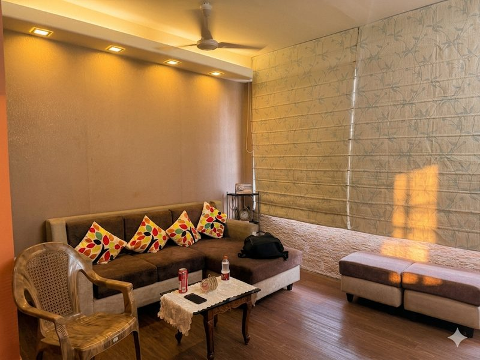

Every period of concentrated intellectual production that history remembers had a physical centre. The Edinburgh clubs. The Medici palaces. The coffee houses of 18th-century London. The Tagore family's Jorasanko. The work happened in those rooms: debate, revision, collaboration, and the particular kind of thinking that only happens when people share a table rather than a screen.
By the mid-twentieth century, an entire generation in Calcutta had been inspired by Jorasanko to build their own generative retreats in their own homes. The tradition was never about the one house. It was about what that house made thinkable. The Generative Retreat is an attempt to recreate that condition — not to replicate Jorasanko, but to continue what it started.
The model is simple. A mid-century house in South Calcutta: a drawing room for gathering, a work room for producing, a kitchen serious enough for recreation as well as experimentation. Resident for three to four months a year. Available for workshop residencies, writing retreats, and the kind of extended conversation the Digital Agency Project requires but that no hotel or serviced apartment can host.


Not to preserve it behind glass. To inhabit it. To make things in it. To continue, in that specific place, what the Bhadralok generation started.
Ashutosh & Meenakshi Chatterji
Calcutta produced the Bengal Renaissance on no resources other than the energy of people who felt that their education came with an obligation. It did so in a language that had no institutional backing, no court patronage, no historical prestige. It built that tradition in a century and a half, and the tradition held long enough to produce a Nobel laureate writing in Bengali.
That energy does not disappear. It goes underground. It waits for a structure that can hold it. The Generative Retreat is one such structure: small, specific, and deliberately located in the city where the precedent was set.
South Calcutta in particular. This is where the modern Bhadralok lives: the engineers, doctors, academics, and lawyers who are the direct inheritors of the Bengal Renaissance tradition. Too many of them are caught in the same vicious cycle the Digital Agency Project is trying to break — educated for ambition, rewarded for compliance, and quietly aware that something has gone wrong. The Generative Retreat belongs in their neighbourhood. It is addressed to them.
The legal arrangement is conventional tenancy. Rent paid year-round; in residence three to four months a year. But the project can only succeed if the owner cares what happens to the house — not only what rent it earns. We are looking for that kind of owner as much as we are looking for the right property.
What follows is a precise account of our requirements and responsibilities, defined clearly so there is no ambiguity on either side.
Minimum habitability
- Functioning bathroom plumbing
- Hot and cold running water
- Toilet with proper flush and seal
- Shower or bath operational
- Drainage without blockage or backflow
- No visible pipe leaks or wall seepage
- Functioning kitchen plumbing
- Hot and cold running water at sink
- Drainage without blockage
- Gas line present and safe, or LPG provision
- No visible leaks or seepage
- Electrical wiring adequate and safe
- Basic lighting in all rooms
- AC installation structurally feasible
- Structurally sound interior
Properties below this threshold are heritage restoration projects. We admire that work but it is not our undertaking.
Standard requirements
- Air conditioning in bedroom, drawing room, work area
- Functional kitchen for serious cooking
- Hob with minimum four burners, gas or induction
- Oven or OTG
- Adequate counter space for active preparation
- Exhaust fan or chimney with ventilation
- Refrigerator space or provision
- Sufficient power points for appliances
- Working storage, not decorative cabinetry alone
- Internet infrastructure in place
- Windows and shutters restored and operational
- Pest treatment and thorough clean completed
- Adequate power points throughout
We do not occupy until standard requirements are met. We may offer an advance against rent to help owners reach this threshold, to be deducted from future rent.
Aesthetic and functional improvements
- Period-appropriate lighting fixtures
- Bookshelves, drawing room configuration, working furnishings
- Kitchen upgrades beyond the functional baseline
- Any other improvements we choose to make
These are our investment, depreciated over five years. If we vacate before five years, residual value is either compensated by the owner or the improvements remain with the property — to be agreed in writing at the outset.
All structural repairs — walls, floors, ceilings, surfaces, and plumbing infrastructure — remain the owner's responsibility under all circumstances and at all times. This is not negotiable and not subject to cost-sharing.
We are looking actively. If you know of a property in South Calcutta that fits this description — a mid-century house, currently underused or vacant, whose owners would welcome this kind of use — we would like to hear from you.